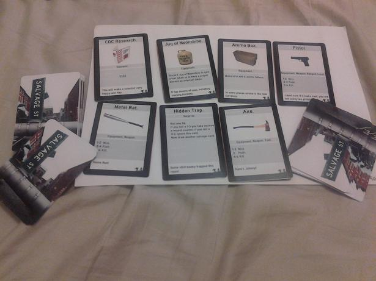

LU
lugaru
2012-11-14 18:53 UTC
#1
So as I've stated before I'm a game creater. Part of why I worship "Sentinels of the Multiverse" so much is that I had struggled for a long time to make a semi-casual superhero game, and when I thought it was impossible I found a perfectly elegant example of it.
Here is the thing: I always ran into the problem that you cant really make cards at home, unless you wanna use cut outs in sleeves or index cards with sharpy or whatever. I've been searching for months for solutions and bam, these guys have almost everything. I already put in my first order which is 90 cards for like $8.70 to start playtesting my next game, which I might actually try selling if it works out.
Just figured you guys should know, looks like a real shot of adrenaline for the indy game design community and now I have like 4 ideas I wanna prototype, print and potentially sell.
https://www.thegamecrafter.com/
TH
TheJayMann
2012-11-14 19:12 UTC
#2
It appears they sell by the sheet, and that each sheet is 11"x17" (basically, two regular papers placed side by side to make a larger sheet of paper), and the items are printed as much as can be printed on a single sheet. It's a shame some of the smaller cards start to increase the price of the sheet, it would be nice to print smaller cards in order to get a smaller price per card.
I do have card stock, and, if I take the time, I can usually cut it decent, but the printer I use is never perfect when printing, sometimes leaves smudges on the first half inch fed, and typically leaves a bow that will never go away. I also have some sealing spray to seal the cards when done, giving it a finish you typically see on purchased cards, and a corner punch to give it a rounded rectangle cutout. I just have never had anything worth while to print on them (other than some playtest cards, though they tend to change so often it is usually a waste of decent paper).
LU
lugaru
2012-11-14 19:28 UTC
#3
Yeah, my original plan was to use these guys
http://plaincards.com/
But I'm a little enamored with the range of crazy options I'm seeing (they make me wanna build something with Hexagonal tiles).
I did my single player playtesting on "cut in half" index cards but I'm gonna do the multiplayer (not me controlling each character) using the cards I ordered with a moderately ugly template and lots of free clip art.
LU
lugaru
2012-11-19 20:08 UTC
#4
Got my cards... really like them. They are game cards, so not MTG density (or any of thew post 1st edition Sentinels) but more of what you would expect inside a game like Pandemic... thick enough to shuffle without fear but would get some wear and tear if used as a pure card game like Sentinels.
If you can tell, I'm working on the 10,000th zombie game out there, but I'm excited about this one, more on it as it comes together.
edit: also if you squint you can see a little bit of border on the cards, I need to make the black border like one mm thicker, I was lazy and made a border but left all the markers from the template, I'm just painting the whole border solid black for my next edition... together with a nicer card template and fixed typos and game mechanics.
